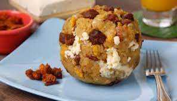

BOLON DE VERDE

Descripcion
El bolón de verde es un desayuno tradicional entre los campesinos de la costa de Ecuador. El mismo nombre del plato nos dice exactamente qué es: una bola de plátano macho, llamado verde, el cual es muy apreciado en ese país latinoamericano.
Esta receta de bolón de verde puede tener varios rellenos, pero los más típicos son chicharrón de cerdo o queso. También puede ocurrir que tenga ambos ingredientes, lo que lo convierte en un bolón mixto.
No hay una forma específica o única de hacer el bolón de verde. Los plátanos se pueden freír, asar o hervir antes de hacerlos puré. También es posible escoger entre utilizar plátanos muy verdes o usar unos un poquito más maduros, lo que le dará un toque dulce. Se puede agregar cebolla u otras hierbas.
En todo caso, en RecetasGratis queremos enseñarte cómo hacer bolón de verde con una preparación sencilla y rápida para que pruebes este riquísimo plato y lo disfrutes con tus seres queridos.
Ingredientes
- 2 platanos verdes o pintones.
- 150 gramos de chicharron de cerdo.
- 150 gramos de queso blanco de mesa.
- 1/2 cucharadita de sal.
- 1 cucharada sopera de mantequilla.
- Aceite suficiente para freir
PREPARACION
- Tal como en otras recetas ecuatorianas, el plátano macho, o plátano a secas, es el ingrediente principal. Retira la cáscara y pícalos en dos.
- En este paso, puedes escoger el método de cocción que prefieras. Nosotros decidimos hervirlo. Toma unos 15 minutos para que estén listos, si cuentas desde que rompe el hervor.
- Cuando ya estén cocidos, escúrrelos y májalos con ayuda de un pasapuré o un tenedor. Agrega la sal y la cucharada de mantequilla.
- Cuando esté aún tibio, al menos lo suficiente para manejarlo con las manos, agrega el chicharrón picado finamente o molido y el queso rallado grueso.Cuando esté aún tibio, al menos lo suficiente para manejarlo con las manos, agrega el chicharrón picado finamente o molido y el queso rallado grueso.
- Mezcla todo muy bien, amásalo con las manos hasta que esté integrado.
- Forma los bolones con las manos para darles una forma redondeada.
- Fríe los bolones de plátano en abundante aceite caliente. Procura que doren por todos lados.
- Escúrrelos bien en papel de cocina antes de servirlos.
- Servir y degustarlo junto a una taza de cafe.
Regresa a la pagina de inicio